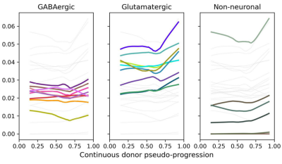
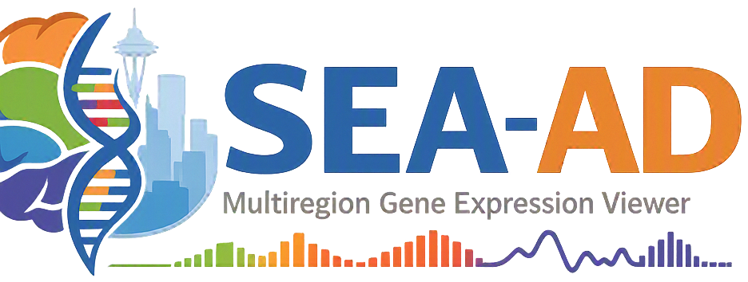
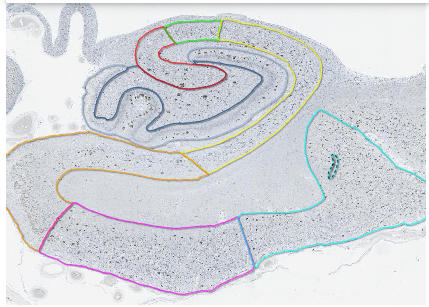
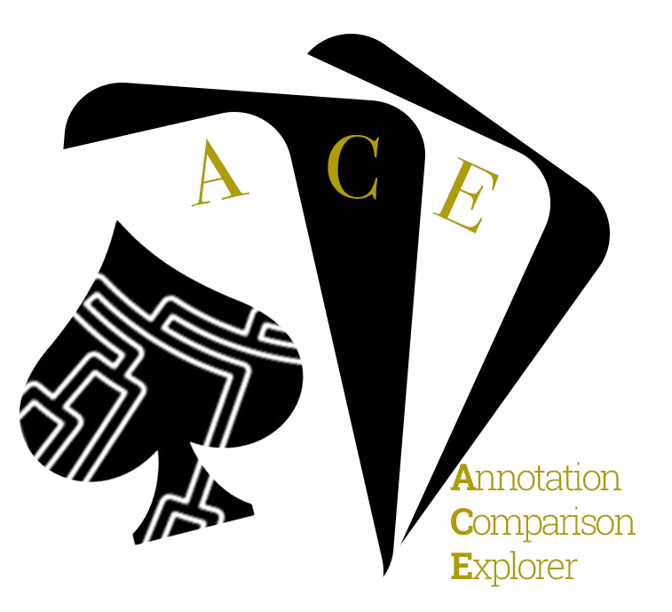
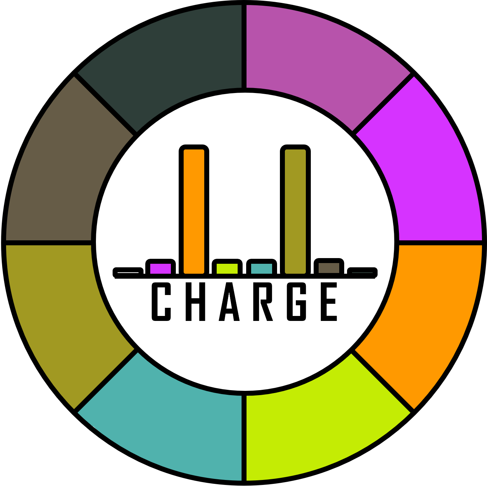
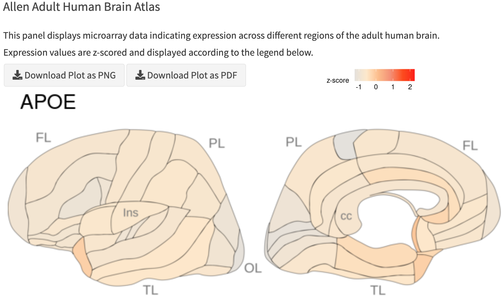

A collection of interactive tools and prototype applications for the Seattle Alzheimer’s Disease Brain Cell Atlas (SEA-AD). These applications provide access to gene expression, cell type, trajectory, neuropathology, and annotation exploration resources.

Identify and visualize cell type-specific gene expression changes across AD pseudo-progression in MTG.

Explore gene expression patterns in multi-region single cell data in the context of cell types, brain regions, and disease progression.

Explore neuropathology images and associated measurements from multiple brain region in SEA-AD donors.

Compare cell type annotations between SEA-AD and ten community studies of AD or user data from MapMyCells.

Identify genes of potential biological interest in multiple cell type taxonomies (including SEA-AD MTG).

Explore patterns of gene expression in the brain across multiple Allen Brain Atlases (including SEA-AD).
Have a SEA-AD-related application that should be included in the Sandbox? Submit a GitHub issue with a short description of the tool, application URL, repository URL, and an icon image and we will add it as a new card!